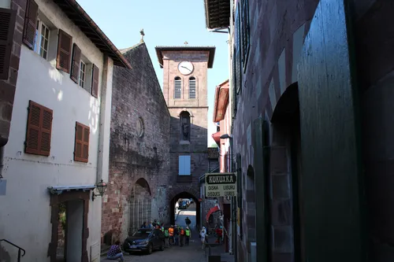
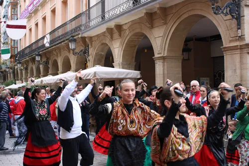
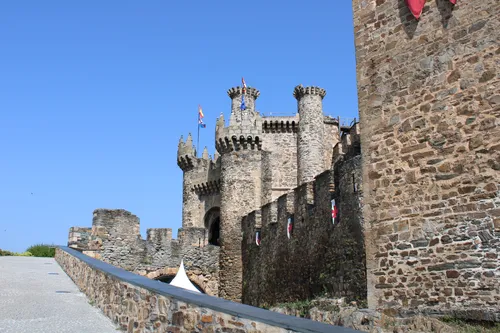
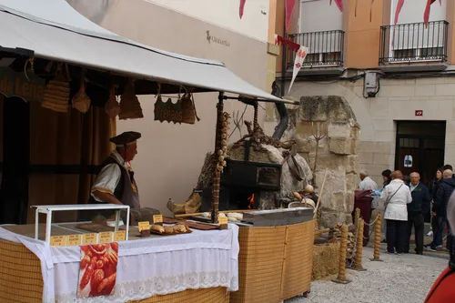
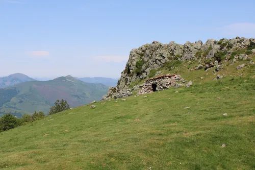
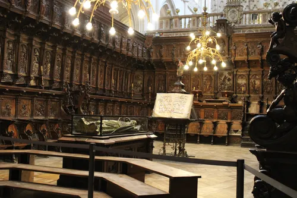

Saint Jean Pied De Port
The Trailhead
Just walk and enjoy the day


Saint Jean Pied De Port
Continued →
Just walk and enjoy the day


Every time I came out of the woods into a city, they had celebrations
try to find out where this was and write the story, not sure if i will use the link but leave it for now
Explore the National Museum of Anthropology
Walking around this castle gave off a range of vibes from nostalia to eerie
A twelfth century castle built to protect the pilgrims

This baker had the best meat pastries
.
Your best shot at surviving a snowstorm in the Pyrenees

El Cid was buried in this cathedral, but I don't think this is him. I will find him when I find all of my photos.
